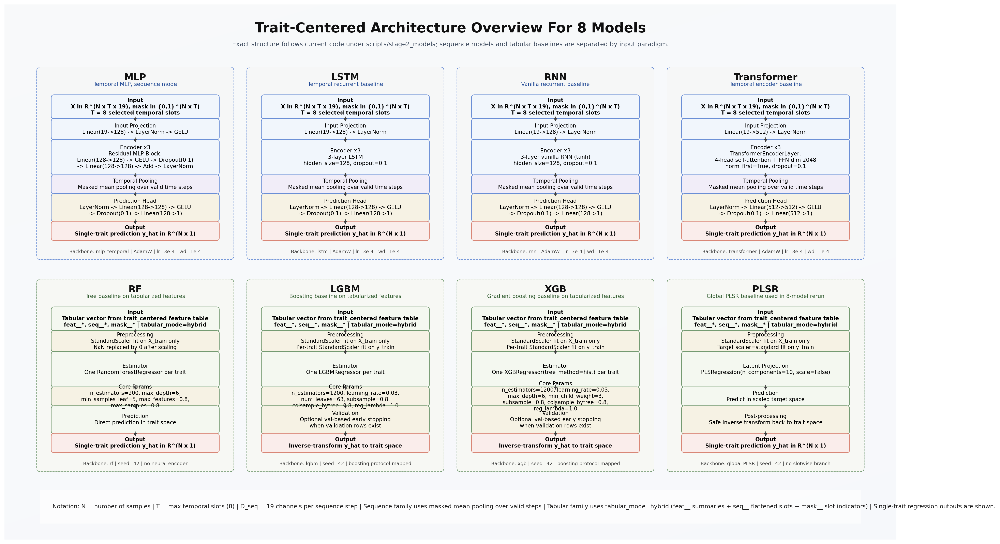
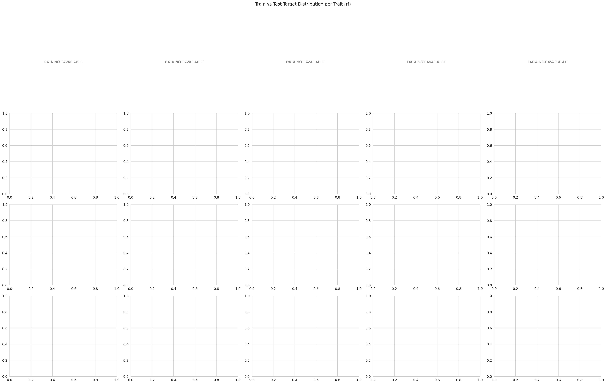
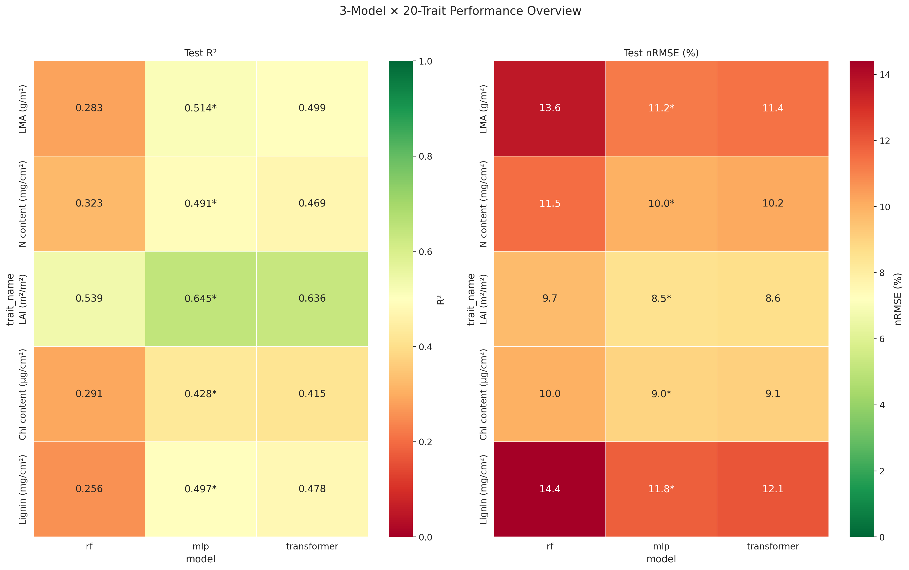
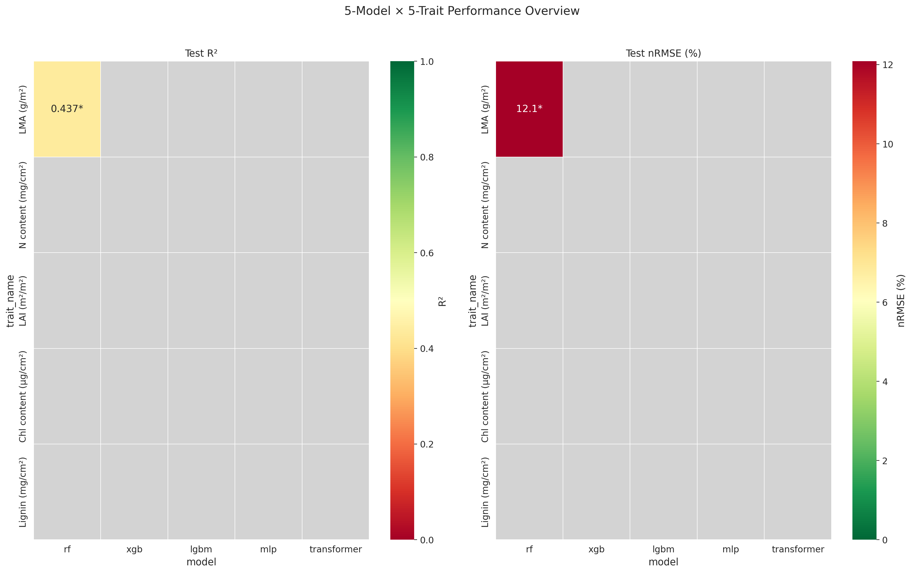
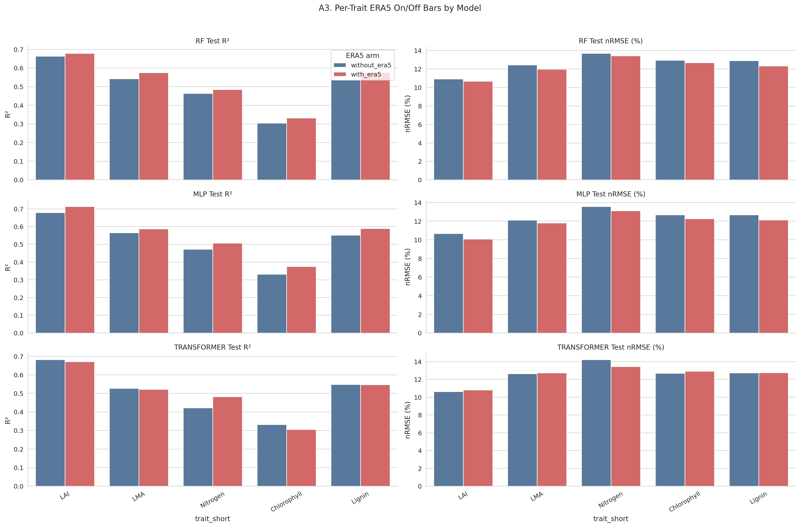
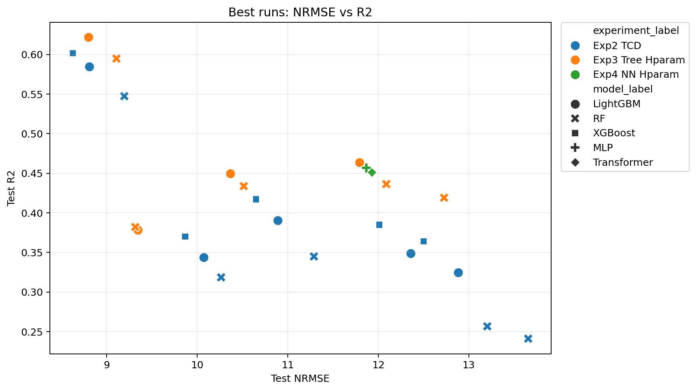

Introduction
EcoSpectra develops trait-centered models for predicting vegetation functional traits from Earth-observation time series. The current work focuses on a reintegrated data path that rebuilds the sample and model contracts before promoting any new result to the full canonical model comparison. This is necessary because the trait-label source, forest mask, split policy, and model-ready sequence cache jointly define the scientific comparison: changing any of these components invalidates downstream model metrics.
The active pipeline is documented in the project memory under an A/B/C/D architecture. Layer A prepares upstream data sources, Layer B constructs sample manifests and model contracts, Layer C trains the canonical model stack, and Layer D runs ablations and extended comparisons. The current report captures the status as of 2026-05-07 and is intended as a reproducible technical snapshot rather than a final manuscript.
The report has three goals. First, it records the current data contract used by the reintegrated path. Second, it summarizes the experiments currently being run or interpreted. Third, it separates completed evidence from partial or pending work so that the next full 20-trait canonical run can be promoted only after the 5-trait gate is clean.
Data and study area
Trait-label and predictor sources
The trait-centered workflow uses sparse hyperspectral trait-label sources and dense temporal predictors. EnMAP remains the primary hyperspectral trait-label source; PRISMA v1 is implemented as an additional hyperspectral trait-label source under the project input tree. Sentinel-2 region zarrs provide the optical temporal predictor series . Optional climate context is derived from ERA5-Land nearest-point daily zarrs covering the 50 EnMAP-compatible sites and years 2022–2025 .
The canonical forest mask is Copernicus HRL 2021 tree-cover density, with inclusion defined as TCD ≥ 30. Sites 19, 30, and 47 are excluded by default because of land-cover coverage gaps. ForestPaths genus features remain ablation-only and are not part of the canonical mask.
Current data contract
The current B-layer contract is trait-centered. Each event is defined by site, year, spatial pixel, trait time, and source provenance where available. Sentinel-2 observations are assembled in an eight-slot temporal window using a zero-plus-mask missing-observation policy. A critical data rule is that valid pixels are not assumed to have supervised labels: the B2 manifest construction must retain a finite trait-label check because valid_mask = 1 can still coincide with all trait labels missing.
| Component | Current setting |
|---|---|
| Sample window | 28-day window, 14-day core, Tmax = 8 temporal slots |
| Forest mask | Copernicus HRL 2021 TCD ≥ 30 |
| Excluded sites | 19, 30, 47 |
| Split policy | global_grouped_70_15_15_seed42 |
| Canonical input profile | with_full_time_context |
| Sample metadata profile | none; sample-own site and
year are excluded from model inputs |
| Gate traits | LAI, LMA, Nitrogen, Chlorophyll, Lignin |
| Label rule | Preserve finite-label and label-mask contracts across all model families |
Methods
Pipeline architecture
The current execution architecture is shown in Fig. 1. Upstream source preparation is separated from model-contract construction so that changes in Sentinel-2, hyperspectral labels, HRL, ERA5-Land, or future auxiliary sources can be traced to the downstream artifacts they invalidate. Model training is only meaningful after the B-layer filtered contract and sequence cache pass validation.

Model families
The canonical C-layer model stack consists of random forest, sequence MLP, and Transformer. Random forest provides the CPU tree baseline ; sequence MLP and Transformer consume the B8 temporal sequence cache, with Transformer following the self-attention sequence-model family introduced by . LightGBM and XGBoost are active extended tree comparisons in D-layer experiments, not the current canonical C definition.
Fixed hyperparameters for future reintegrated-data experiments are taken from the cap2000 train20 hyperparameter searches recorded in the project memory. RF, LightGBM, and XGBoost use trait-specific defaults for the five gate traits. MLP and Transformer currently use the LMA-selected settings as neural defaults unless newer trait-specific searches supersede them.
Evaluation
Experiments use train, validation, and test partitions from the grouped split. Scalers, target transforms, imputers, and normalizers are fit on train data only. Metrics are reported in original trait scale through RMSE, normalized RMSE, and R2. When a run is still active, this report records status from the run manifest instead of inferring missing metrics.
Active experiments
Reintegrated B-D-C gate
The current task is to validate the reintegrated data path before
launching a full 20-trait canonical comparison. The active source
manifest is dev_sample_manifest.csv. B-layer artifacts are
written under a reintegrated output root, with an initial capped 5-trait
gate under the HRL TCD ≥ 30 mask. The
cap2000 sharded-sequence gate defines 15 planned model-trait rows: RF,
MLP, and Transformer across the five gate traits.



Cap2000 best-HP low-observation-weighted five-model experiment
The low-observation-weighted experiment tests RF, XGBoost, LightGBM,
MLP, and Transformer on the cap2000 five gate traits, with
train_fraction=0.2. Samples with fewer than three valid
temporal observations receive training weight 0.5; all other samples
receive weight 1.0. The tree lanes can run with the existing
trait-specific incumbents. MLP and Transformer are blocked for four
traits until five-trait neural incumbents are complete.
| Model | Blocked | OK | Pending | Running | Skipped |
|---|---|---|---|---|---|
| LightGBM | 0 | 0 | 5 | 0 | 0 |
| MLP | 4 | 0 | 0 | 0 | 1 |
| Random forest | 0 | 1 | 3 | 1 | 0 |
| Transformer | 4 | 0 | 0 | 0 | 1 |
| XGBoost | 0 | 0 | 5 | 0 | 0 |
At report time, the only completed low-observation-weighted metric
row is RF on LMA: 32,276 train samples, 34,586 validation samples,
34,427 test samples, test NRMSE 12.09%, and test R2 = 0.437. All other
low-observation-weighted metrics should be treated as unavailable until
their manifest rows reach ok.

ERA5-Land context ablation
The ERA5-Land ablation compares the canonical full-time-context profile against the same profile augmented with past-biweekly ERA5-Land context. It uses RF, MLP, and Transformer across LAI, LMA, Nitrogen, Chlorophyll, and Lignin, paired by the same grouped split and trait scope.
| Model | Traits | Mean ΔR2 | Mean ΔNRMSE percentage points |
|---|---|---|---|
| MLP | 5 | 0.0343 | -0.4617 |
| Random forest | 5 | 0.0270 | -0.3567 |
| Transformer | 5 | 0.0035 | -0.0512 |
| All paired rows | 15 | 0.0216 | -0.2899 |


Hyperparameter and year-combination sensitivity
The cap2000 train20 hyperparameter searches provide the fixed defaults used by the current reintegrated experiments. Tree hyperparameter search outputs contain 510 rows across RF, LightGBM, and XGBoost and the five gate traits. The year-combination sensitivity experiment is registered and has a 60-row manifest across XGBoost, MLP, and Transformer, but at report time it is not yet complete enough for result interpretation.

Discussion
The current evidence supports three practical conclusions. First, the reintegrated path is now sufficiently structured to be reported through a B-D-C gate: source matching, HRL filtering, grouped splits, and sequence-cache construction are treated as explicit contracts rather than implicit preprocessing details. Second, ERA5-Land context currently shows a consistent positive paired signal, strongest for MLP and RF and weak for Transformer. Third, the low-observation-weighted five-model comparison is not yet mature enough for scientific interpretation because most rows are still pending, blocked, or running.
The main limitation of this report is that it is a live technical snapshot. Some figures are generated from running summaries and should be regenerated after all manifest rows reach final status. In particular, low-observation weighting and year-combination sensitivity require updated manifests before their results can be promoted from status tracking to scientific conclusions.
Conclusion
This first EcoSpectra technical-report version establishes a reproducible narrative for the active reintegrated traits-model experiments. The next report revision should update all run manifests, regenerate prompt-standard figures, replace placeholder running-summary interpretations with final metrics, and then decide whether the 5-trait gate is clean enough to launch the full 20-trait canonical RF, MLP, and Transformer comparison.
Acknowledgments
This report is generated from the EcoSpectra traits-model project memory, run manifests, and prompt-standard analysis figures available on 2026-05-07.